VS Code for the Web - Azure
VS Code for the Web 是 Visual Studio Code 的零安装、基于浏览器的版本。/azure（简称）环境可通过
该环境由 Azure Cloud Shell 提供支持，提供长达 4 小时的计算时间，无需手动配置开发环境或安装依赖项。/azure 预装了最新的库、扩展和工具，让你即刻开始编码。
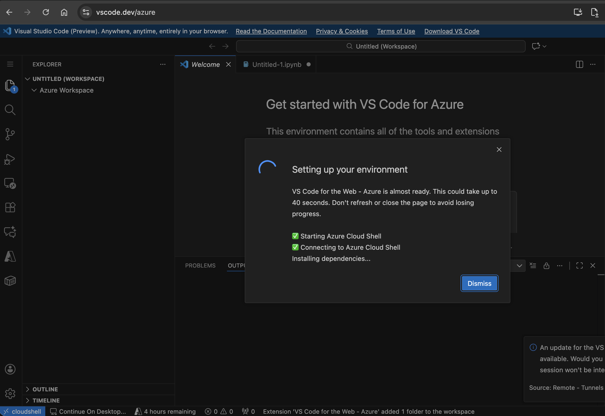
入门指南
/azure 环境包含你开始开发和部署 Azure 应用程序所需的一切：
预装扩展
Azure Developer CLI - 此扩展使你能够更轻松地使用 Azure Developer CLI 运行、创建 Azure 资源以及部署 Azure 应用程序。
支持的编程语言
所有主要运行时均已预装：
- Python - 3.12.9
- Java - openjdk 17.0.16 2025-07-15 LTS
- OpenJDK Runtime Environment Microsoft-11926113 (build 17.0.16+8-LTS)
- OpenJDK 64-Bit Server VM Microsoft-11926113 (build 17.0.16+8-LTS, mixed mode, sharing)
- OpenJDK Runtime Environment Microsoft-11926113 (build 17.0.16+8-LTS)
- Node.js - v20.14.0
- C# - 9.0.304
GitHub 仓库
使用 GitHub Repository 扩展将你的更改无缝地直接提交到 GitHub 仓库。GitHub Repositories 允许你在编辑器中远程浏览和编辑仓库，无需将代码拉取到本地计算机。你可以在我们的 GitHub Repositories 指南中了解更多关于该扩展及其工作方式的信息。
在桌面版 VS Code 中继续工作
在 Azure Cloud Shell 容器时间用完后，你可能希望继续在桌面版 VS Code 中工作。使用位于 VS Code for the Web 状态栏中的 Continue Working on 按钮，将你的代码提交到 GitHub 上选择的仓库，并转移到你的本地环境。
在此体验中，你有两种本地继续工作的选项：
- 使用 Docker：启动一个预配置的开发容器。
- 本地使用 VS Code：克隆仓库并使用 README 配置你的环境。
Azure 入口点
/azure 体验与 Microsoft Foundry 集成，将代码更贴近开发者。Open in VS Code for the Web 等按钮可直接在 Chat Playground、Agent Playground 和 Microsoft Foundry 主页等环境中使用。请参阅示例用例或场景部分了解更多信息。
入门步骤：
- 选择一个模型。
- 构建并测试你的代理。
- 选择 View Code，然后选择你的编程语言和 SDK。
- 通过 Open in VS Code 按钮，一键直接在 Web 版 VS Code 中启动。
或者，你也可以从 Microsoft Foundry 主页创建代理：
- 打开 Microsoft Foundry 主页 (
- 查看主页上生成的建议代码片段
- 选择 Open in VS Code，体验一键根据生成的代码创建代理
此外，开发者可以使用 AI App Gallery (https://aka.ms/aiapps) 中的模板，并选择 Open in VS Code 将模板一键启动到 /azure 环境。
入门步骤：
- 导航到 AI App Gallery (https://aka.ms/aiapps)
- 选择一个模板或搜索你想要运行的模板
- 从下拉菜单中选择 Open in VS Code
- 直接在 VS Code 中启动，并使用 GitHub Copilot 回答你可能遇到的任何问题。
我们还与 Azure 门户进行了集成。当 Azure Copilot 生成代码时，开发者现在可以从中访问"Open in VS Code"按钮。
入门步骤：
- 打开 Azure 门户并使用你的 Azure 账户登录
- 导航到 Azure Copilot 并开始开发你想要构建的场景
- 在 Copilot 生成代码后，选择生成的代码文件，然后选择 Open in VS Code
- 直接在 VS Code 中启动，并使用 GitHub Copilot 回答任何后续问题。
示例用例或场景
以下是 \azure 环境中常用的场景。
- 使用 Microsoft Foundry 创建代理
- 访问 Microsoft Foundry NextGen 门户，在你的代理生成的代码旁选择 Open in VS Code
- 让 VS Code for the Web - Azure 环境初始化并设置你的环境
- 阅读 README 文件并按照步骤运行 create_and_run_agent.py 文件
- 你的代理将被创建并成功运行！继续使用 Foundry 扩展（已预装）来微调你的代理，或按照以下步骤使用你的代理创建应用程序
- 访问 Microsoft Foundry NextGen 门户，在你的代理生成的代码旁选择 Open in VS Code
- 从 Microsoft Foundry 门户中，为你的用例选择最佳模型，包括来自 Foundry Models 的 o3、o4-mini 或 MAI-DS-R1。在本例中，我们将使用 gpt-4o-mini 作为代理工作流的示例模型。
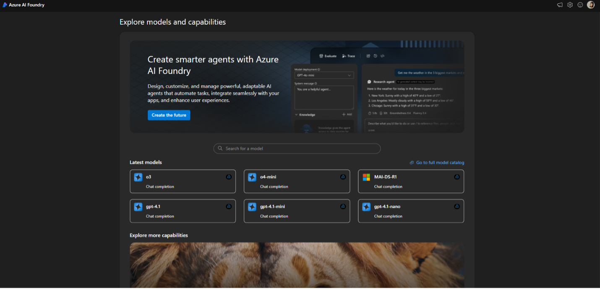
- 从 gpt-4o-mini 模型卡片中配置模型终结点。
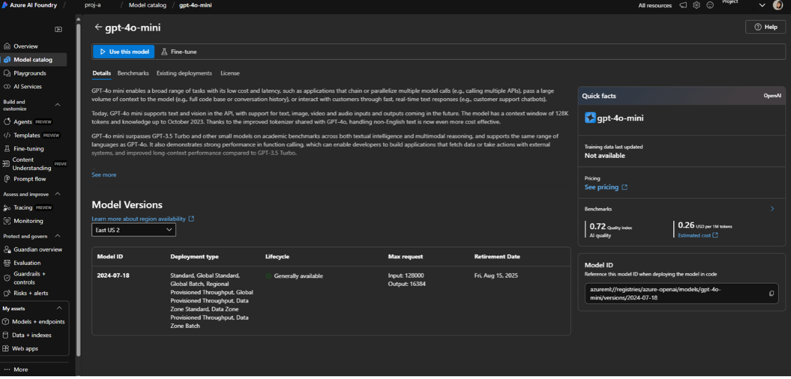
- 进入代理 playground，调整生成控制选项，如最大响应数和历史消息数。添加知识、工具和操作。
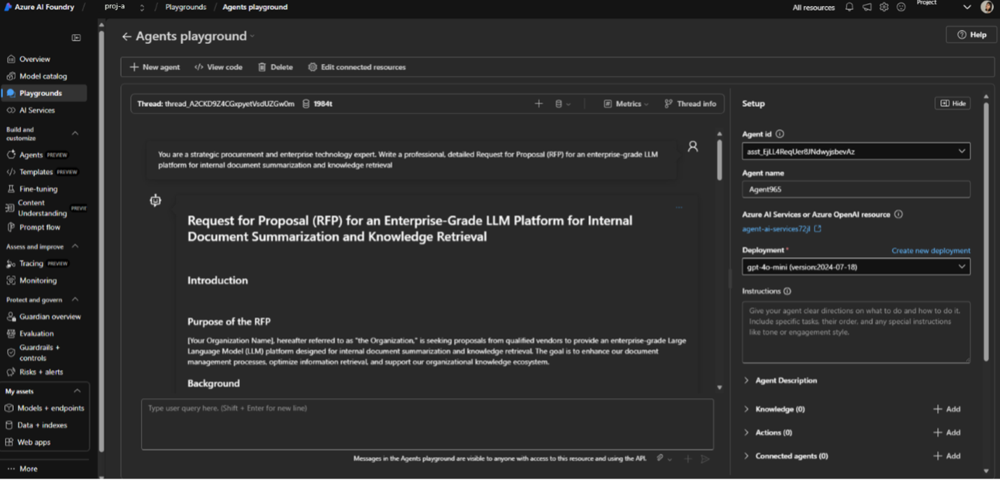
- 迭代你的示例提示词，并在代理 playground 中继续试验。
- 满意后，选择 View Code 按钮，查看你在代理 playground 中与代理互动的上下文代码示例。
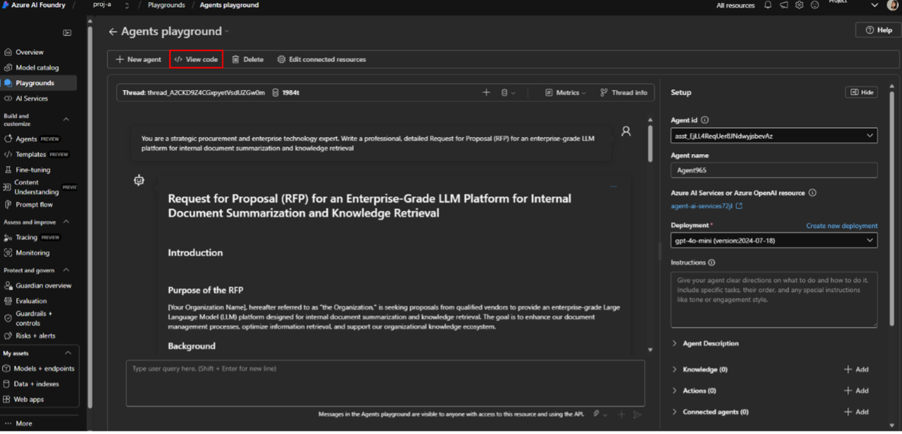
在那里，你可以看到代理的多语言代码示例（Python、C# 和 JavaScript），以及模型的 JSON、cURL、JavaScript、C# 和 Go 代码示例，Entra ID 可用于对代理进行身份验证，模型现在支持"密钥授权"。
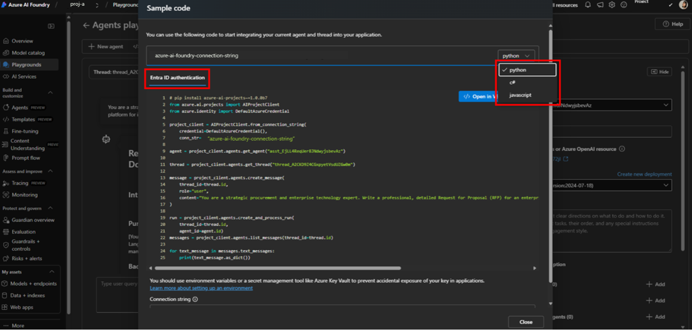
- 准备好后，选择 Open in VS Code，你将被重定向到 VS Code for the Web 的 /azure 环境。
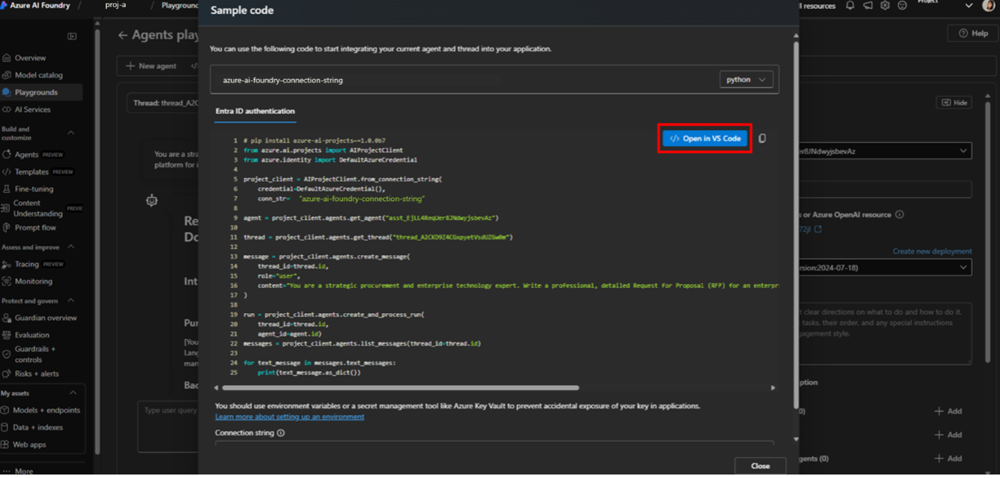
你会注意到，随着环境的设置，代码示例、API 终结点和密钥将自动导入到新的 VS Code for the Web 工作区中。
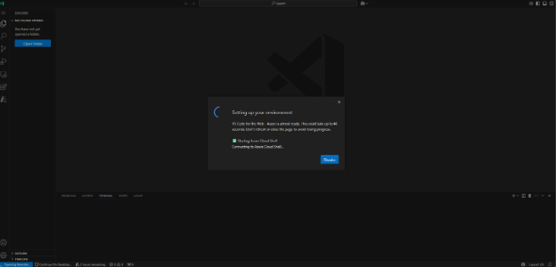
在右下角，你会看到 API 密钥已设置在终端的环墧变量中，并且示例代码已成功下载。
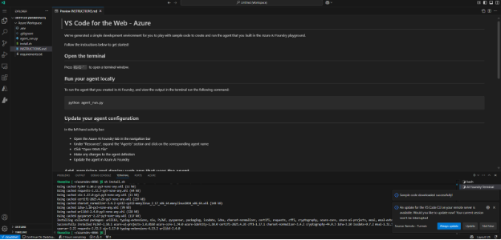
- 通过终端使用
python agent_run.py在本地运行模型。几秒钟内，你将看到成功的模型响应。
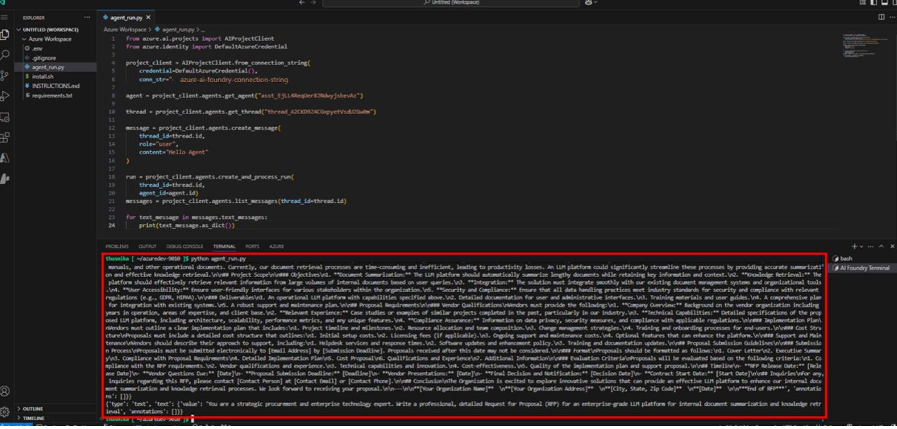
- 可以使用
azd命令来配置和部署使用该代理的 Web 应用。azd init会初始化 git 仓库，创建一个默认的 Azure 工作区，代理可以在该工作区中用于应用程序。
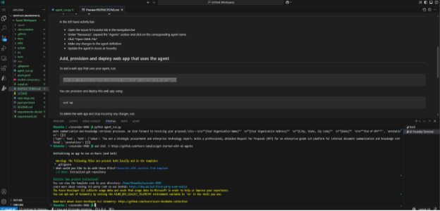
azd up配置 Web 应用并创建相关的 Azure 资源。完成后，你可以通过选择终端中提供的链接在浏览器中查看你的应用程序正在运行。
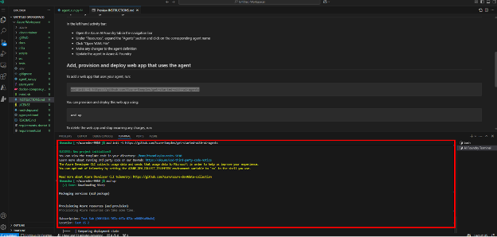
- 通过选择左下角的"Continue on Desktop"，在桌面版 VS Code 或 GitHub Desktop 中继续工作。此按钮允许你在一次操作中将工作区移动到本地环境。如果你已有附加到现有应用程序的开发容器，你可以选择使用该容器或移动到本地环境。
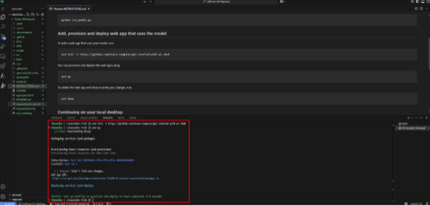
上述快速入门适用于 vscode.dev/azure，因为 vscode.dev/azure 已涵盖所有先决条件：
- 已安装 Python
- 已安装 Azure Functions Core Tools
- 需要自行安装的部分：
- Azure Functions 扩展
- 已安装 Azure Functions Core Tools
- 使用 AI Toolkit 构建和测试 AI 代理
主要功能：
- 拥有丰富生成式 AI 模型来源的模型目录（GitHub、ONNX、OpenAI、Anthropic、Google 等）
- 引入你自己的模型，支持远程托管模型或本地运行的 Ollama 模型
- 通过聊天进行模型推理或测试的 Playground
- 支持多模态语言模型的附件
- 对选定 AI 模型进行批量运行提示词
- 使用数据集评估 AI 模型，支持 F1 分数、相关性、相似度、连贯性等流行的评估器
- 引入你自己的模型，支持远程托管模型或本地运行的 Ollama 模型
- 使用 VS Code 扩展和 Python 进行快速原型开发
- 使用 Azure Copilot 创建、编辑和部署代理
限制
虽然 VS Code for the Web 几乎与桌面版 VS Code 功能相当，但开发环境仍存在一些限制：
- 除了 Cloud Shell 之外没有终端访问权限
- 对某些原生扩展或语言功能的支持有限
- 不支持离线使用
故障排除
如果你在使用 VS Code for the Web – Azure 时遇到任何问题，请在我们的 GitHub 仓库中提交问题。
连接问题
如果你无法连接到
使用右上角的按钮在 Azure 门户中打开 Cloud Shell。
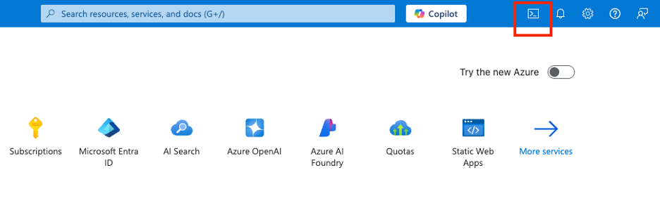
接下来，在 Settings 下拉菜单中选择 Reset User Settings。
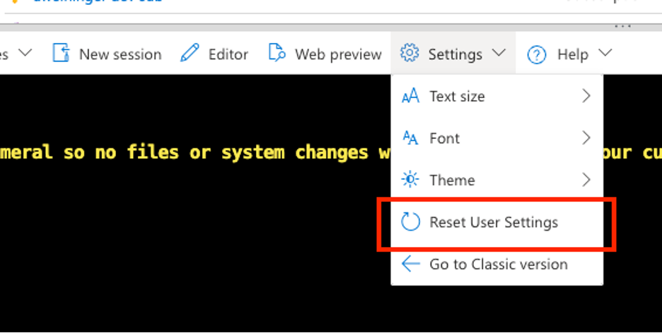
完成后，你应该会看到以下屏幕。
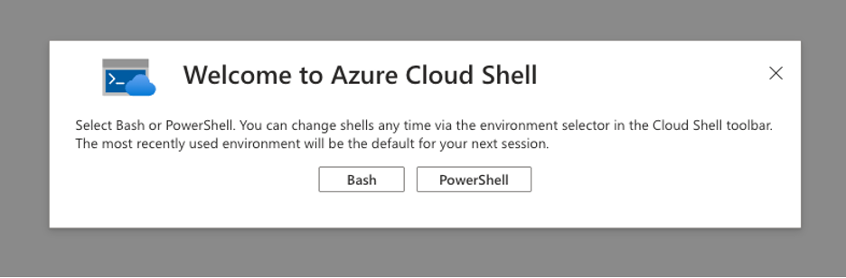
收集日志
扩展日志将帮助我们诊断 vscode.dev/azure 的任何问题。你可以通过转到 Output 视图，然后选择 VS Code for the Web - Azure 输出通道来访问它们。
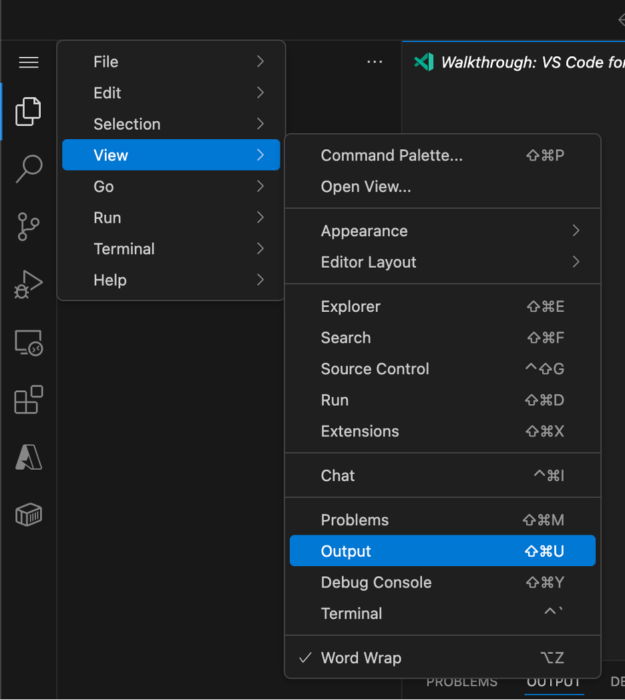
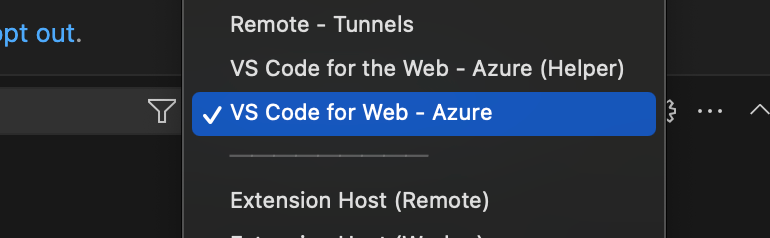
相关资源
继续通过以下资源进行学习和探索：
在使用 vscode.dev/azure 过程中发现问题时，请在我们的 GitHub 仓库中创建问题。信息越详细越好。如果可能，请附上"VS Code for the Web - Azure"输出通道的日志。